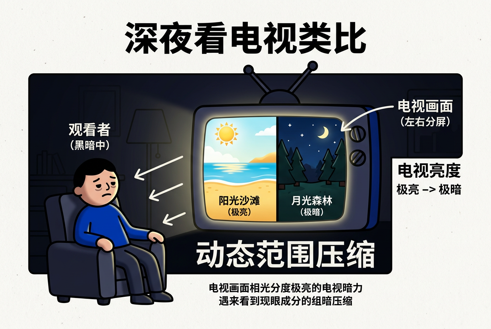
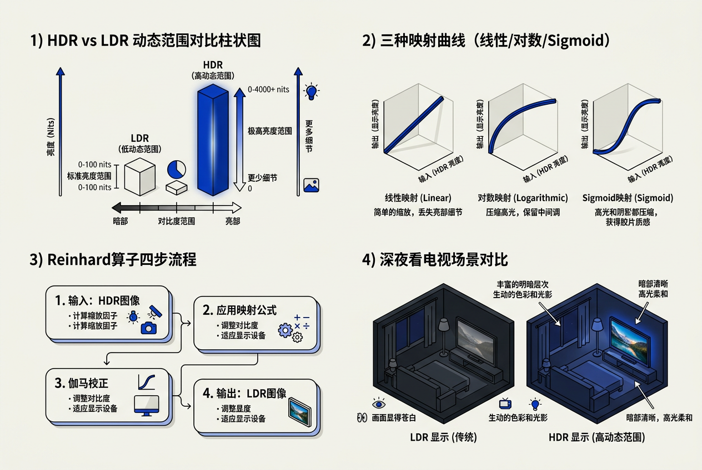
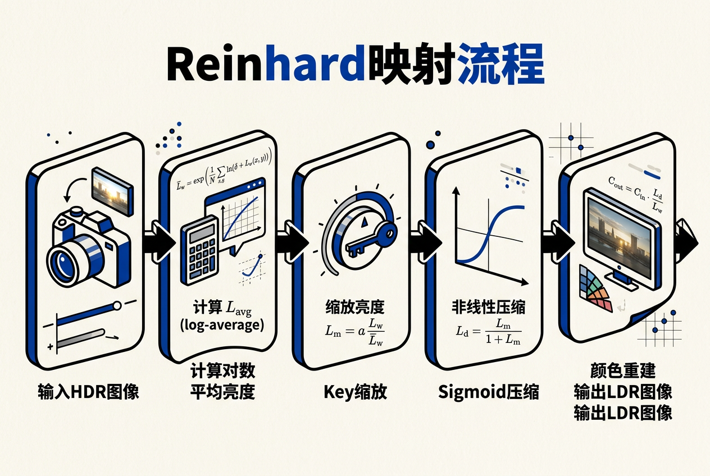

第20章：色调再现 — 零基础讲义
讲义说明
本讲义基于 Steve Marschner & Peter Shirley 所著《虎书5》第5版第20章（p.569-594）。
核心问题：渲染器算出来的是一个物理上正确但显示器放不下的高动态范围（HDR）图像，你怎么把它压缩到显示器能显示的低动态范围（LDR）而不丢失细节？
本版插画采用 Guizang 材质插画风格重新绘制。
20.1 问题的诞生：深夜看电视场景
想象一个场景：深夜你关灯看电视。电视里是一部电影，有两个镜头——
- 镜头 A：白天阳光下的沙滩，非常亮
- 镜头 B：月光下的森林，非常暗
你的电视机只有一个亮度范围（比如 0~300 尼特†）。它怎么同时显示"阳光"和"月光"？
如果它把"阳光"缩放到 300 尼特，"月光"就几乎变黑了，什么都看不见。如果它把"月光"抬升到能看见的程度，"阳光"就过曝成一团白。

20.1.1 数字层面的问题
渲染器算出来的 HDR 图像（每个像素是浮点数）：
窗外的阳光直射表面 → 亮度 = 100,000 cd/m²
室内的桌面 → 亮度 = 100 cd/m²
桌下的阴影 → 亮度 = 0.5 cd/m²
显示器能显示的范围（普通 SDR† 显示器）：
最亮 = 300 cd/m²
最暗 = 0.3 cd/m²
比例 = 1000:1
问题是：100,000 和 0.5 差了 20 万倍，显示器只有 1000 倍范围。
↓
必须用一种"聪明的压缩"——色调映射（Tone Mapping）
20.1.2 人眼的动态范围†
自然界的亮度范围：
星光夜空 .............. ~0.001 cd/m²
月光下 ................ ~1 cd/m²
室内灯光 .............. ~100 cd/m²
阴天室外 .............. ~1,000 cd/m²
阳光直射 .............. ~100,000 cd/m²
太阳本体 .............. ~1,000,000,000 cd/m²
↑ 相差 9 个数量级（10亿倍）
人眼的能力：
单一时刻能分辨 ≈ 4~5 个数量级（10000:1 ~ 100000:1）
通过瞳孔调节+化学适应，整体可适应 10+ 个数量级
显示器的短板：
SDR 显示器：~2 个数量级（1000:1）
HDR 显示器：~3~4 个数量级（高端 > OLED）

20.2 三种直觉解法
如果你自己来设计"HDR→LDR 压缩"，你会怎么做？ 下面三种方法从简单到复杂，逐渐逼近工业标准。
解法 1：直接线性缩放（最简单但最差）
思路：把所有亮度按比例缩小到显示器范围。
举例：原始最大值 = 100,000 → 缩小到 300
原始 0.5 → 0.5 × 300/100000 = 0.0015 → 几乎黑色
结果：阳光部分正常了，阴影部分什么都看不见。
因为自然界亮度范围太大了（10万倍），线性缩放会把暗区压到接近0，丢失所有暗部细节。这就像你用"等比例缩图"把一座大山和一座小丘画在同一张纸上——小丘变成几乎看不见的一个点。
解法 2：取对数（经典解法）
思路：用对数把乘法关系变成加法关系，压缩大值，保留小值。
直觉：log 的特性——大值被压得狠，小值被压得少
100,000 → log 之后 → 11.5
0.5 → log 之后 → 0.4
比值从 200,000:1 缩小到 28:1
结果：亮区和暗区都能看到了，但对比度偏平（像"褪色"了）
解法 3：S 形曲线（工业标准）
思路：用 Sigmoid† 曲线——暗部线性保留，亮部渐近压缩。
其中 k 是"半饱和常数"†
特性：暗部 → 近似线性（细节保留）
亮部 → 渐近压缩（不会过曝成一团白）
中间区域 → 平滑过渡
这就是游戏/电影里最常见的色调映射曲线形状
20.3 为什么不能简单缩放？
核心矛盾
| 场景 | 动态范围 | 需要怎么处理 |
|---|---|---|
| 阳光海滩 | 极亮（100,000 cd/m²） | 大幅压缩 |
| 月光森林 | 极暗（1 cd/m²） | 适度提升 |
| 室内桌面 | 中等（100 cd/m²） | 基本保留 |
问题：同一个场景、同一张图像，同时包含三种区域。一个函数无法同时满足所有需求。
| 方案 | 海滩 | 森林 | 结论 |
|---|---|---|---|
| 压暗（线性缩小） | 正常 | 全黑 | 暗部丢失 |
| 提亮（线性放大） | 过曝 | 正常 | 亮部丢失 |
| S形曲线 | 压缩但可看 | 提亮但可看 | 两者兼顾 |
20.4 两条路线
| 路线 | 思路 | 现状 |
|---|---|---|
| 路线 A：硬件 HDR | 显示器本身支持 HDR（OLED、Dolby Vision），增加硬件的动态范围 | 正在普及，但尚未完全 |
| 路线 B：软件色调映射 | 用算法把 HDR 压缩到 LDR 显示 | 当前主力方法，本章主题 |
无论硬件 HDR 发展到什么程度，色调映射算法都不可或缺——因为内容的动态范围总是超过硬件的极限。
20.5 动态范围详解
20.5.1 LDR 和 HDR 编码格式
| 编码格式 | 每通道位数 | 动态范围 | 典型用途 |
|---|---|---|---|
| 8-bit LDR (sRGB) | 8 bit | ~2.4 log₁₀ | 普通显示器、网页图片 |
| 10-bit HDR10 | 10 bit | ~3 log₁₀ | 蓝光、HDR 电视 |
| FP16 (OpenEXR) | 16 bit 浮点 | 理论 760 个数量级 | 渲染中间结果、电影制作 |
| FP32 | 32 bit 浮点 | 天文数字 | 科学计算、高精度渲染 |
20.5.2 三种度量方式
这是在解决什么问题：动态范围本质上就是"最亮除以最暗"。但不同行业用不同的尺子量——结果一样，单位不同。
| 度量方法 | 公式 | 用中文说就是 | 例子（阳光/阴影） |
|---|---|---|---|
| 比值法 | Lmax/Lmin | 最亮除以最暗 | 200,000:1 |
| 对数法 | log₁₀(Lmax/Lmin) | 用对数尺子量，差1=差10倍 | 5.3 log₁₀ |
| SNR法 | 20·log₁₀(信噪比) | 考虑了噪声，暗区噪声太大再暗也白搭 | （取决于传感器） |
20.6 颜色处理
20.6.1 亮度压缩，颜色不变
这是在解决什么问题：HDR 图像有 RGB 三个通道。如果对三个通道单独压缩，颜色比例会乱掉——红色压得比绿色多，画面就偏色了。所以正确的做法是：只压缩亮度，RGB比例保持不变。
用中文说就是：原始 RGB 除以亮度（得到颜色比例），再乘以压缩后的亮度（恢复亮度但保留色相†）。
20.6.2 饱和度问题
这是在解决什么问题：太严格保持 RGB 比例，亮区的颜色反而会变得"过艳"——因为人眼在亮场景下对颜色的敏感度降低。
| s 值 | 效果 | 适用场景 |
|---|---|---|
| s = 1 | 完全保持 RGB 比例 | 可能过艳，不太自然 |
| s = 0.6 | 适度降低饱和度 | 最常用的默认值 |
| s = 0.3 | 大幅降低饱和度 | 模拟亮环境下的视觉 |
20.7 图像形成模型
20.7.1 基本模型
这是在解决什么问题：一个像素的亮度是怎么来的？我们需要一个简单模型来理解"亮度"的组成成分。
| 符号 | 含义 | 用中文说就是 | 范围 |
|---|---|---|---|
| L(x,y) | 你看到的像素亮度 | 照片上那个位置的明暗 | 0 ~ 很大 |
| r(x,y) | 反射率 | 物体"本来"的明暗——白墙≈0.9，黑布≈0.05 | 0.005 ~ 1 |
| E(x,y) | 照度 | 照到物体上的光有多强——太阳下 vs 月光下 | 0 ~ 极大 |
白墙（反射率0.9）即使光照弱也比较亮；黑布（反射率0.05）即使光照强仍然暗。
懂了这一点，就懂了色调映射的核心策略：压缩照度（E），保留反射率（r）。
20.7.2 对数域：加法比乘法好处理
这是在解决什么问题：取对数之后，"乘法"变成了"加法"，方便我们分别处理反射率和照度。
| 成分 | 变化频率 | 物理含义 | 处理策略 |
|---|---|---|---|
| log(r)（反射率） | 高频（变化快） | 纹理、边缘、细节 | 保留 |
| log(E)（照度） | 低频（变化慢） | 整体明暗 | 压缩 |
20.8 全局空间算子
20.8.1 对数平均亮度
这是在解决什么问题：我们需要知道场景的"平均亮度"来调节整体明暗。但普通平均会被极亮的像素（如太阳）主导，不代表人眼感知的"平均"。对数平均解决了这个问题。
四步拆解：
- 给每个亮度加小常数 δ（防 log(0)）
- 取自然对数 log()
- 对所有像素求平均
- 再取指数 exp() 恢复成亮度值
为什么不用普通平均？
场景中有太阳 = 亮度 1,000,000
其他都是阴影 = 亮度 10
普通平均 ≈ 500,000 → 被太阳主导
log 平均 ≈ 3,162 → 更反映人眼感知的平均亮度
普通平均会被这盏灯大幅拉高，导致整体压得过暗。而log平均把极亮值的影响控制在对数域——10倍的光强差距在对数域只差1个单位。这就是为什么log平均是"感知平均"。
20.8.2 Sigmoid 压缩曲线
这是在解决什么问题：Sigmoid 曲线是在"线性保留"和"渐近压缩"之间做权衡。暗部线性增长（细节分明），亮部渐近压缩（不会过曝）。
| 情况 | 数学 | 效果 |
|---|---|---|
| L << f（暗区） | Ld ≈ L/f | 线性，细节丰富 |
| L >> f（亮区） | Ld ≈ 1 | 渐近饱和，不超白 |
| L = f（中间） | Ld = 0.5 | 正好一半 |
20.8.3 除法算子
| 方法 | 公式 | 用中文说就是 | 问题 |
|---|---|---|---|
| 全局除法 | Ld = Lv / L̄v | 每个像素除以平均亮度 | 暗处仍然太暗 |
| 局部除法 | Ld = Lv / Lblur | 除以周围区域的平均亮度 | 边缘有光晕（halo） |
20.9 Reinhard 色调映射（逐行注释）
这是在解决什么问题：Reinhard 色调映射（2002年发表）是最经典的色调映射算法。它把前面的所有技巧整合成三步——缩放→压缩→颜色重建。

完整代码（每行中文注释）
// ======== Reinhard 色调映射（C++ 伪代码，每行注释） ========
// 输入：HDR 图像（浮点数组，可能包含极大值如 100,000）
// 输出：LDR 图像（浮点数组，范围约 [0, 1]）
// ---- 函数1：计算对数平均亮度 ----
// 这个函数的目的：找出场景的"感知平均亮度"
float computeLogAverageLuminance(const float* hdrImage, int pixelCount)
{
float sum = 0.0f;
float delta = 0.0001f; // 防止 log(0) 的小常数
for (int i = 0; i < pixelCount; i++)
{
// 取 log：把宽范围压缩到可计算的范围
sum += log(delta + hdrImage[i]);
}
// 平均后取指数，得到"感知上的平均亮度"
return exp(sum / pixelCount);
}
// ---- 函数2：亮度缩放（Key 调整） ----
// 这个函数的目的：把 HDR 亮度的范围"挪"到适合压缩的位置
float scaleLuminance(float L, float L_avg, float key)
{
// key = "场景亮度偏好"参数，通常 key = 0.18（18% 灰卡反射率）
// key = 0.18 是摄影中的"中性灰"标准
// key 越大 → 场景整体偏亮（像过曝照片）
// key 越小 → 场景整体偏暗（像欠曝照片）
//
// 公式含义：scaled = (key / L_avg) × L
// 平均亮度高的场景 → 缩小幅度大 → 整体压暗
// 平均亮度低的场景 → 缩小幅度小 → 整体提亮
return (key / L_avg) * L;
}
// ---- 函数3：Sigmoid 压缩 ----
// 这个函数的目的：把缩放后的亮度压缩到 [0, 1] 范围
float compressSigmoid(float L_scaled)
{
// 基本 Reinhard 公式：L_d = L_scaled / (1 + L_scaled)
//
// 用中文说就是：亮度除以"自己+1"
// L_scaled很小（暗区） → 分母≈1 → L_d≈L_scaled（线性保留）
// L_scaled很大（亮区） → 分母≈L_scaled → L_d≈1（渐近饱和）
// L_scaled=1（中间） → L_d=0.5
return L_scaled / (1.0f + L_scaled);
}
// ---- 函数4：颜色重建（可选饱和度控制） ----
// 这个函数的目的：把压缩后的亮度重新应用到 RGB 通道
void reconstructColor(
const float* hdrR, // HDR 红色通道
const float* hdrG, // HDR 绿色通道
const float* hdrB, // HDR 蓝色通道
float* ldrR, // LDR 红色通道（输出）
float* ldrG, // LDR 绿色通道（输出）
float* ldrB, // LDR 蓝色通道（输出）
const float* hdrLum, // HDR 原始亮度
const float* ldrLum, // LDR 压缩后亮度
int pixelCount,
float saturation // 饱和度控制 [0, 1]，通常 = 0.5~1.0
)
{
for (int i = 0; i < pixelCount; i++)
{
// 给每个通道（R/G/B）做饱和度修正
// 公式：C_ldr = (C_hdr / L_hdr)^s × L_ldr
//
// (C_hdr / L_hdr) = "这个颜色比例"
// ^s = 饱和度指数（s=1完全保持，s<1降低饱和度）
// × L_ldr = 乘上压缩后的亮度
//
// s=1.0时：RGB比例完全保持（可能过艳）
// s=0.5时：颜色被"去饱和"→ 更自然
ldrR[i] = pow(hdrR[i] / hdrLum[i], saturation) * ldrLum[i];
ldrG[i] = pow(hdrG[i] / hdrLum[i], saturation) * ldrLum[i];
ldrB[i] = pow(hdrB[i] / hdrLum[i], saturation) * ldrLum[i];
}
}
// ---- 主函数：完整的色调映射管线 ----
void reinhardToneMap(
const float* hdrImage, // HDR 亮度数组
int pixelCount,
float* ldrOutput, // LDR 亮度输出
float key = 0.18f, // 亮度偏好（摄影参考：18%灰）
float saturation = 0.6f // 饱和度（默认 0.6 较自然）
)
{
// Step 0：计算对数平均亮度
float L_avg = computeLogAverageLuminance(hdrImage, pixelCount);
// Step 1-2：对每个像素做 "缩放 + Sigmoid 压缩"
for (int i = 0; i < pixelCount; i++)
{
float L = hdrImage[i];
float L_scaled = scaleLuminance(L, L_avg, key); // Step 1
ldrOutput[i] = compressSigmoid(L_scaled); // Step 2
}
// Step 3（颜色）：在主程序中用 reconstructColor() 处理 RGB
}
Reinhard 参数速查
| 参数 | 典型值 | 含义 | 大→小 |
|---|---|---|---|
| key | 0.18（摄影标准） | 整体亮度偏好 | 大→更亮，小→更暗 |
| saturation | 0.6 | 饱和度控制 | 1→完全保持，0.5→适度去饱和 |
| 对数平均 | 自动计算 | 场景的"感知平均亮度" | 自动 |
20.10 局部算子
20.10.1 为什么要用局部？
这是在解决什么问题：全局算子用同一个压缩曲线处理整个场景。但一个场景可能同时包含极亮（太阳）和极暗（洞内），全局曲线无法同时照顾两边。
全局 Sigmoid 的问题：
太阳亮度 = 100,000 → 被压到接近 1.0
洞内亮度 = 0.1 → 被放大到接近 0.0（仍然太暗？）
如果让洞内可见 → 调低 f → 太阳会过曝
解决方案：不同区域用不同的压缩曲线。
太阳区 → 用大 f（压缩更狠）
阴影区 → 用小 f（压缩更轻）
这需要知道"每个像素所属的区域"→ 局部算子
20.10.2 局部除法 + 双边滤波
| 方法 | 公式 | 优点 | 问题 |
|---|---|---|---|
| 高斯模糊除法 | Ld = Lv / Lgaussian | 简单快速 | 边缘产生光晕（halo） |
| 双边滤波除法 | Ld = Lv / Lbilateral | 边缘保持，无光晕 | 计算慢 |
20.10.3 频率域方法
这是在解决什么问题：既然照度是"低频"（变化慢），反射率是"高频"（变化快），那就把图像做"频段分离"——压缩低频、保留高频。
步骤：
① 把图像转到"对数域"（把乘法变成加法）
② 用双边滤波分离 base（低频/照度）和 detail（高频/反射率）
③ 只压缩 base layer（照度）
④ 把 detail 加回去
⑤ 指数变换回亮度
20.11 工业级算子
20.11.1 ACES（Academy Color Encoding System）
ACES 是好莱坞电影工业的标准色调映射方案。用一句话说：ACES 是一条"模拟真实胶片响应"的多项式曲线。
| 特性 | 说明 |
|---|---|
| 输入 | 场景线性光（scene-referred） |
| 输出 | 显示就绪的 sRGB（display-referred） |
| 核心 | 一个拟合好的多项式函数 |
| 暗部处理 | 保持对比度 |
| 亮部处理 | "胶片肩部"——模拟真实胶片的饱和 |
20.11.2 Filmic（Uncharted 2 / John Hable）
| 对比维度 | ACES | Filmic |
|---|---|---|
| 追求 | 物理准确（电影标准） | 视觉好看（游戏标准） |
| 暗部 | 准确还原 | 特意提亮（玩家需要看清暗处） |
| 调参 | 固定曲线 | 对比度、饱和度、白点可调 |
| 复杂度 | 较高（多项式拟合） | 较低（6个系数） |
20.11.3 其他工业算子速览
| 算子 | 来源 | 特点 |
|---|---|---|
| Lottes | Lottes 2016 | 暗部细节特别好 |
| Uchimura | Uchimura 2017 | 针对 HDR 显示器优化 |
| Khrushchev（AgX） | Blender 3.0+ | Blender 默认色调映射 |
| Frostbite | EA/DICE | EA 商用引擎的色调映射（未公开） |
| Gran Turismo | Polyphony Digital | 赛车游戏的胶片感 |
20.12 公式速查与选型指南
公式速查表
| 概念 | 公式 | 用中文说就是 |
|---|---|---|
| 图像形成模型 | L = r × E | 亮度 = 反射率 × 照度 |
| 对数分解 | log(L) = log(r) + log(E) | 乘法变加法，方便分开处理 |
| 对数平均亮度 | L̄ = exp((1/N)Σ log(δ+Li)) | 防止高亮像素带偏平均值 |
| 除法算子 | Ld = Lv / f | 每个像素除以参考值 f |
| Sigmoid 压缩 | Ld = Lv / (Lv + f) | 暗区线性、亮区压缩 |
| 饱和度修正 | Cd = (Cv/Lv)s × Ld | s控制饱和度 |
| Reinhard 三步 | ①L′=(key/L̄)L ②Ld=L′/(1+L′) ③Cd=(Cv/Lv)sat×Ld | 缩放→Sigmoid→颜色重建 |
| 对数压缩 | Ld = log(1+Lv)/log(1+Lmax) | 取对数再归一化 |
快速选型指南
| 场景 | 推荐算子 | 原因 |
|---|---|---|
| 移动端游戏 | Reinhard 全局 | 快、简单、GPU 开销小 |
| PC/主机游戏 | ACES 或 Filmic | 质量高、参数好调 |
| 电影/离线渲染 | 局部算子（双边滤波） | 质量最优 |
| 建筑可视化 | Reinhard | 稳定、参数少 |
| VR/AR | 全局算子 + 防晕动 | 速度快 |
| 夜场景 | 暗视觉模型 + 蓝移 | 沉浸感 |
色调映射 = 告诉显示器"你看到的亮部该多亮、暗部该多暗"——它模拟人眼的适应能力，把物理世界的宽亮度范围巧妙地塞进显示器的窄范围里。